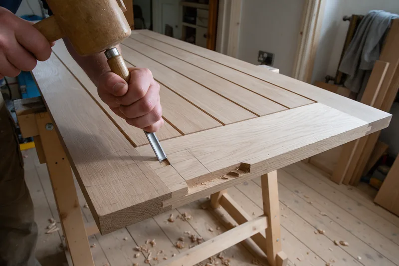
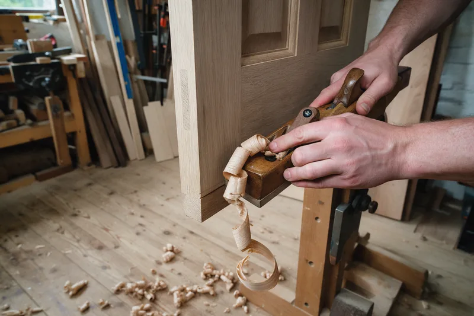

Home / Services / Internal doors and fire doors
Internal doors and fire doors
Internal doors and fire doors.
Hung to the opening you have rather than the one the door was made for. Hinge recesses cut by hand, gaps even all the way round, the latch lining up with the keep, and a door that still shuts when the weather turns.
Why a new door rarely fits straight out of the wrapper
Doors are made in standard sizes. Openings in houses round here are not. A door lining that was fitted in eighteen ninety and has had a century of a settling house pushing on it is not the same width at the top as at the bottom, and it is not plumb either. So a new door gets held up, scribed to the actual opening, and taken down where it needs it.
There is a limit to how much can come off, which is the thing worth knowing before you order. A solid door will take a fair bit. A hollow core door has a strip of real timber round the edge and not a lot of it, so once you are through that there is nothing to screw a hinge into. That is why we would rather look at the opening before you buy six doors than after.
What hanging a door properly involves
The lining gets checked first, and sometimes packed or adjusted, because hanging a door on a twisted lining means fighting it for the rest of the job. Then the door is offered up, the gaps marked, the edges planed, and the hinge positions marked off the lining rather than measured, so the knuckles land where the frame already has them.
Recesses get cut with a chisel to the depth of the hinge leaf, so it sits flush. Sunk too deep and the door springs back off the frame. Left proud and the door will not close. Then the latch, the keep lined up with it, the handles at a height that matches the rest of the house, and the stops adjusted if the door has any wind in it.
Fire doors, said plainly
We fit fire doors to the maker's instructions. That means the right door for the opening, the gaps and the intumescent seals as those instructions set them out, the ironmongery they call for, and the right screws all the way through rather than whatever is in the van.
What we will not do is tell you a door is rated when we have not seen the paperwork, or claim anything about testing or certification. If you have a job where somebody official needs to sign it off, say so at the start and we will tell you honestly what is ours to do and what is not.

Generated photoGenerated for this demo. Not a photograph of a real job.

Generated photoTaking a door down to fit the opening. The curl of shaving is what the gap at the bottom is made of.
The gaps
What a hung door is judged on.
Drawn at a size you can see. Nobody measures the gaps round a door when they walk past it, but everybody notices when one of them tapers.
Drawn in the browser rather than photographed. The gaps here are exaggerated so they show up at all.
On the job
How this one usually goes.
- The opening gets checkedWidth at top, middle and bottom, height both sides, and a level and a straight edge on the lining. If the lining is twisted or loose, that gets sorted before a door goes anywhere near it.
- The door is offered up and markedHeld in the opening on packers, the gaps marked round with a pencil, and the hinge positions taken off the lining rather than measured from a drawing.
- Edges taken down, recesses cutPlaned to the line on a stand, the hinge recesses chopped by hand to the depth of the leaf, and the arris taken off the edges so it does not catch the paint.
- Hung, then adjustedHinges on, door swung, gaps checked all round, then packed or eased where it needs it. A door that binds at one corner is nearly always a hinge sitting wrong rather than a door that is too big.
- Latch, keep and handlesMortice cut for the latch, the keep marked off the latch so it lines up, handles at a height that matches the rest of the house, and everything screwed rather than banged.
- Tried and left workingOpened and closed properly, checked that it holds where you leave it, and the shavings and the dust cleared up. If it is a fire door, you are told what was fitted and to whose instructions.
A sample running order for this demo. Yours depends on the property and what the timber turns out to be doing.
Questions
Asked about this job.
Can you fit a door I have bought?
Yes, happily, and plenty of people prefer to pick their own. Send a photograph of the door and of the opening before it is delivered though, because doors come in standard sizes and openings do not, and there is a limit to how much can be taken off.
On a hollow core door that limit is small, because the solid timber round the edge is only so deep. On a fire door it is whatever the maker's instructions allow and no more.
How many doors can be done in a day?
There is no number on this page on purpose. It depends entirely on whether the linings are sound, whether the openings are square, whether the doors need much taking off and whether there is ironmongery to cut in.
What we will do is look at the openings and tell you honestly before you book anything. Six easy ones in a modern house and three in an old stone cottage can be the same amount of work.
My door sticks in winter. Does it need replacing?
Almost never. Timber takes up moisture and swells, and the usual culprits are a door that was hung too tight in a dry spell, a hinge working loose, a frame that has moved, or a carpet that was fitted after the door.
The right order is find out which one it is, fix that, and only then take anything off the door. Plane a swollen door in February and you own a door with a draught round it in July. There is a whole article on this under Advice.
Do you take the old doors away?
Yes, and it is on the quote rather than a surprise at the end. Old doors, old ironmongery and the offcuts all go with us.
Can you fit glazed doors or doors into a thin stud wall?
Glazed internal doors, yes. The glass has to be the right sort for a door and it is handled rather than cut on site.
A thin stud wall is a different question. Sometimes the lining is too narrow for a decent door and the honest answer is that the wall wants looking at first. We will say so rather than hang something that will not stay straight.
General trade knowledge written for this demo, not advice on your property.
Our work
Sample jobs like this.
 Generated photoHanging the first of sixRastrick · SampleGenerated photoRecess cut by handHebden Bridge · Sample
Generated photoHanging the first of sixRastrick · SampleGenerated photoRecess cut by handHebden Bridge · Sample Generated photoA fire door into an old liningTodmorden · SampleGenerated photoEasing one that had swollenMytholmroyd · Sample
Generated photoA fire door into an old liningTodmorden · SampleGenerated photoEasing one that had swollenMytholmroyd · SampleMade up samples with generated pictures. Tap one for the detail.
Also
The other things we do.
Staircases and banisters
New spindles and handrails, newel posts, and the creaks taken out of a flight that has been annoying somebody for years. Fitted so the whole thing feels solid under your hand.
More →Fitted wardrobes and storage
Built into the alcove you have, out of square walls and all. Scribed tight to the plaster, up to the ceiling, with no gap on top collecting boxes.
More →Skirting, architrave and flooring prep
Long runs scribed into corners rather than mitred and filled, architrave tight at the head, and floors made flat and quiet before anybody lays anything on them.
More →Sash and timber window repairs
Rotten sections spliced out and new timber let in, sash cords and weights sorted, and the whole thing working again without a plastic window going in.
More →Decking and garden joinery
Decks, gates, stores and screens, framed properly and set so water runs off rather than sits. Outside timber either drains or it rots, and the framing decides which.
More →Shall somebody come and measure it?
Tell us the job and your postcode. Twenty minutes with a tape and a level tells us more than any photograph.